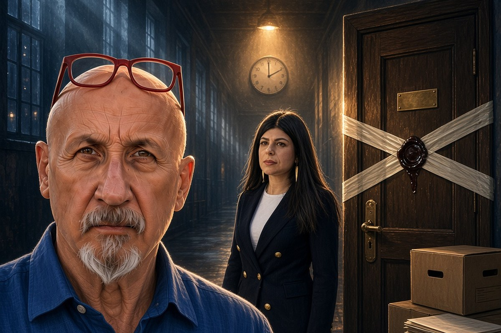

Franco Zanghì
Cronaca · 14 ottobre 2026
L'ufficio di Borsellino restò senza sigilli per più di sei ore

La presidente della commissione antimafia dice di aver trovato segretate carte che non si aspettava, e fa un esempio solo: la stanza del giudice, chiusa alle 23:25 del 19 luglio 1992.
di Franco Zanghì
La porta dell'ufficio di Paolo Borsellino, in Procura a Palermo, è stata chiusa e sigillata alle 23:25 del 19 luglio 1992. La bomba di via D'Amelio era esplosa poco prima delle 17. In mezzo ci sono più di sei ore, e quello che è accaduto dentro quella stanza, in quelle ore, non risulta da nessun atto.
A mettere i sigilli, quella notte, sono stati un ufficiale della polizia giudiziaria della Procura e un funzionario della Squadra mobile di Palermo, alla presenza di tre sostituti procuratori. Le ricostruzioni documentali collocano l'operazione fra le 23:25 e le 23:40. Il punto, però, non è l'orario in sé: è chi ha rimesso quell'orario al centro del discorso pubblico, il 10 ottobre 2026.
Chi lo dice
È stata Chiara Colosimo, presidente della commissione parlamentare antimafia, sul palco di un festival di giornalismo a Roma. Ha detto di avere visto carte che non si sarebbe mai aspettata di trovare segretate. E ha fatto un esempio solo: l'ufficio di Borsellino, chiuso alle 23:25, parecchie ore dopo la strage. Cosa sia successo in quella stanza, ha aggiunto, nessuno lo sa.
Questa frase cambia peso a seconda di chi la pronuncia. Detta da un familiare delle vittime, sarebbe stata archiviata come il dolore di chi non si rassegna. Detta da un cronista, come dietrologia. Qui invece la pronuncia chi ha materialmente la chiave dell'archivio della commissione, lo stesso archivio da cui dice di avere desecretato quelle carte. Alla domanda se ci sia ancora altro da scoprire sulle stragi del 1992 e del 1993, ha risposto che non può escluderlo.
Nello stesso intervento ha raccontato un altro passaggio. Nel luglio 2026 la figlia del giudice, Lucia Borsellino, le ha consegnato una valigia di documenti presi dallo studio privato del padre: appunti e manoscritti che, dice, nessuno aveva mai visto prima.
Che cosa hanno deciso i tribunali
Che su via D'Amelio ci sia stato un depistaggio non è un'opinione: è scritto in sentenza, nel processo Borsellino quater, con la formula del più grande depistaggio della storia italiana. Il 16 settembre 2026 la Corte di cassazione ha reso definitiva la sentenza d'appello del giugno 2024 sui tre ex poliziotti del gruppo investigativo guidato allora da Arnaldo La Barbera. Erano accusati di calunnia in concorso. Il reato è prescritto. L'aggravante di avere agevolato Cosa nostra era già stata esclusa in appello, ed è proprio quell'esclusione che ha fatto scattare la prescrizione.
Il 3 ottobre 2026 il giudice per le indagini preliminari di Caltanissetta ha archiviato il filone che collegava la strage al dossier mafia e appalti: per i magistrati quella pista può essere una concausa, ma non emergono nomi e circostanze tali da iscrivere qualcuno nel registro degli indagati.
E l'agenda rossa, quella che Borsellino portava sempre con sé, non si trova da 34 anni. Sulla sua sparizione la Procura di Caltanissetta ha un filone autonomo ancora aperto. In una richiesta di archiviazione su un altro procedimento, a carico di ignoti, i magistrati hanno scritto che quella sparizione non rispondeva a un interesse diretto di Cosa nostra, ma di ambienti che con Cosa nostra erano in contatto.
Quello che è accertato
Che un depistaggio ci sia stato, lo dice una sentenza. Che per quel depistaggio non esista a oggi un solo condannato in via definitiva, lo dicono gli atti. Che l'agenda non sia mai stata ritrovata, lo dice il tempo. Che la stanza del magistrato appena ucciso sia rimasta non sigillata per più di sei ore, lo dice il verbale di quella notte.
Una cosa la voglio dire da me. Non serve immaginare chissà quale trama per trovare questa storia indecente. Basta la domanda più semplice: perché, nelle ore in cui tutta Italia capiva che era stato ucciso il magistrato che sapeva più di tutti, la sua scrivania è rimasta una scrivania come un'altra. Nessuno risulta indagato per quel ritardo, e non sto accusando nessuno. Dico che una risposta, dopo 34 anni, non c'è ancora.
Resta aperta una contraddizione che non ho costruito io, perché sta negli atti: lo Stato ha messo per iscritto, in una sentenza, di avere subito il più grande depistaggio della sua storia, e lo stesso Stato non ha un solo responsabile definitivo per quel depistaggio. Come si tengono insieme queste due cose?
Fonti
- Fanpage, l'intervista a Chiara Colosimo al festival Rumore, 10 ottobre 2026
- Giornale di Sicilia, la prescrizione definitiva sul depistaggio di via D'Amelio, 17 settembre 2026
- Il Dubbio, la decisione della Cassazione sui tre ex poliziotti
- Giornale di Sicilia, l'archiviazione del filone mafia e appalti, 4 ottobre 2026
- PalermoToday, il decreto di archiviazione del gip di Caltanissetta
L'orario dell'esplosione oscilla fra le 16:58 e le 17 circa a seconda degli atti. L'affermazione di avere desecretato proprio quelle carte è di Chiara Colosimo e non risulta documentata da un atto della commissione. Il filone sull'agenda rossa è ancora aperto e altre desecretazioni sono state annunciate.